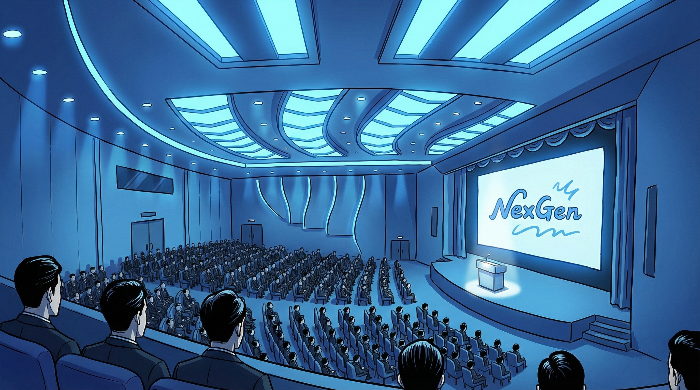
마이크가 울림을 잡았다. 대강당 천장의 LED 패널이 넥스젠 블루로 물들면서,
이천 석 좌석 위로 차가운 빛이 쏟아졌다.
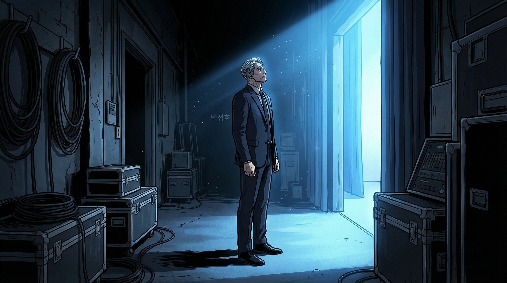
서른 해. 반도체 회의실의 형광등 아래서 시작해 이 무대까지, 서른 해가 걸렸다.
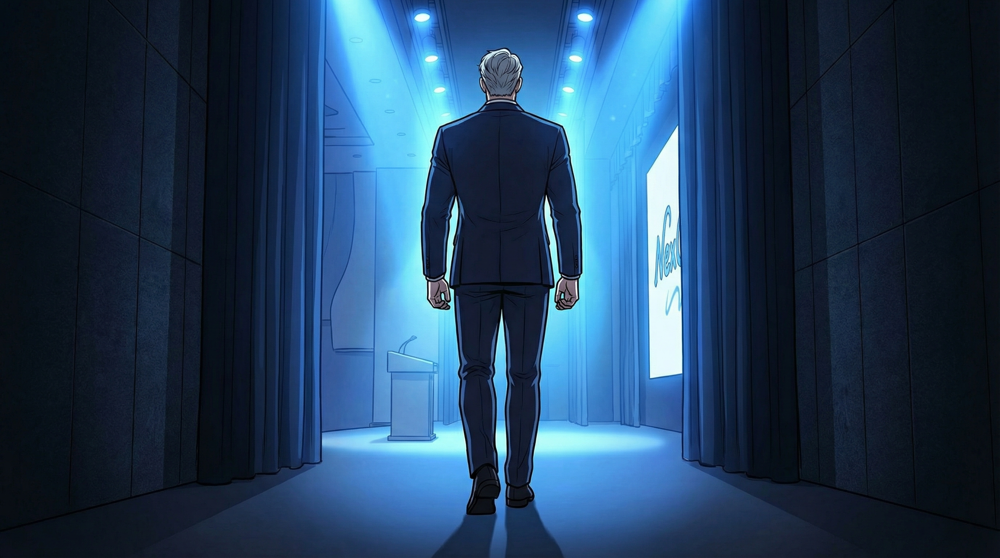
양복 상의 단추를 잠그고 통로를 나섰다. 조명이 얼굴을 때렸다.
등이 곧은 채로 걸었다. 허리가 아프지는 않았다. 다만 발이 무거웠다.
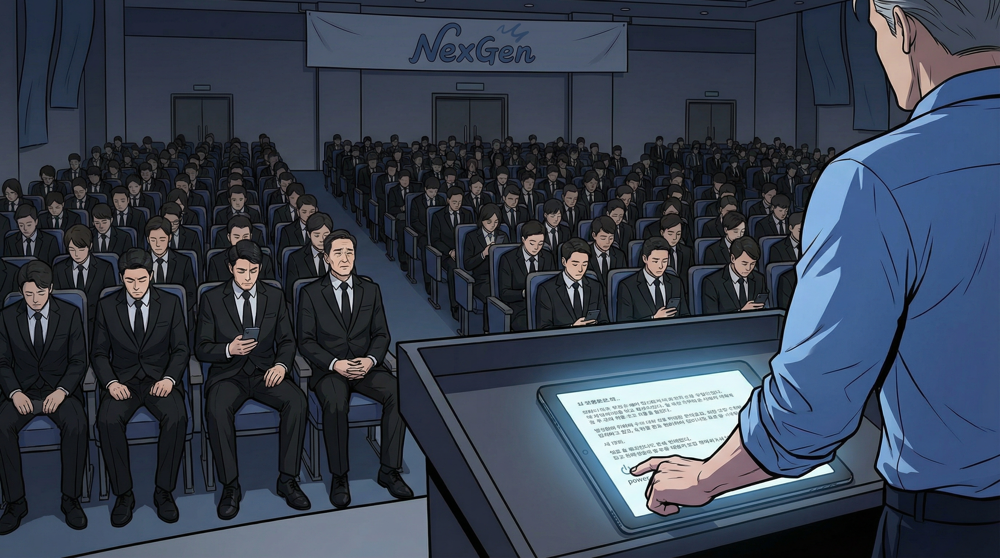
단상 위에 올라서자 객석이 한눈에 들어왔다. 앞줄은 계열사 임원진이 채우고 있었다.
검은 양복, 검은 넥타이.
넥스젠의 장례식 같다는 생각이 스쳤고, 정호는 속으로 웃었다. 내 장례식이 맞지.
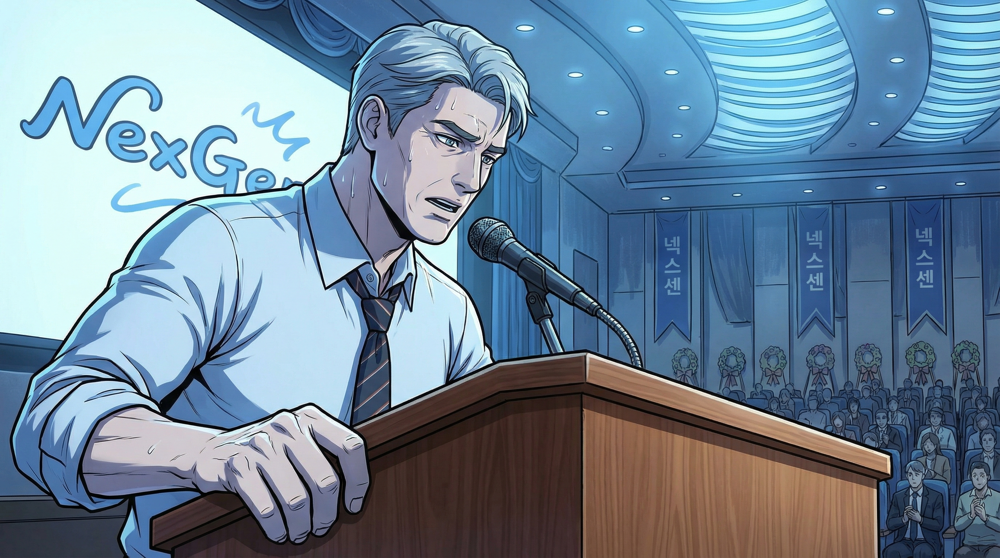
준비한 원고가 단상 태블릿에 떠 있었다. 홍보팀이 다듬어준 문장들.
'혁신의 여정', '함께 만들어온 미래', '새로운 도약'.
정호는 태블릿을 한 번 내려다보고, 화면을 껐다.
"솔직한 이야기를 하겠습니다."
객석의 공기가 미세하게 바뀌었다. 앞줄 임원 한 명이 자세를 고쳐 앉았다.
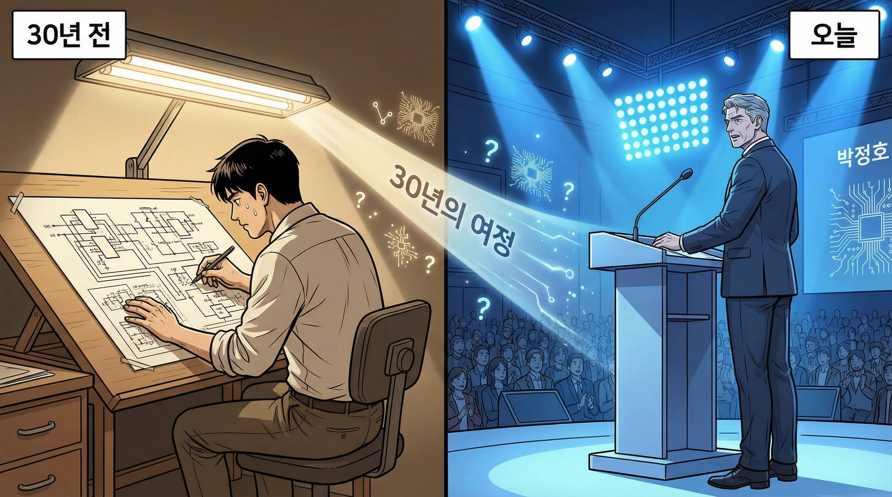
"저는 서른 해 전, 넥스젠에 입사했을 때 반도체 설계 엔지니어였습니다. 그때 저한테 기술이란 건 회로도면 위의 선이었어요. 손으로 그리고, 눈으로 확인하고, 머리로 검증하는 것. 그게 기술의 전부라고 믿었습니다."
"그 후로 기술은 계속 바뀌었습니다. 저는 그 변화를 관리하는 쪽에 섰습니다. 수천 명의 엔지니어 조직을 만들고, 프로세스를 설계하고, 보고 체계를 세웠습니다."
"잘했는지는 모르겠습니다."
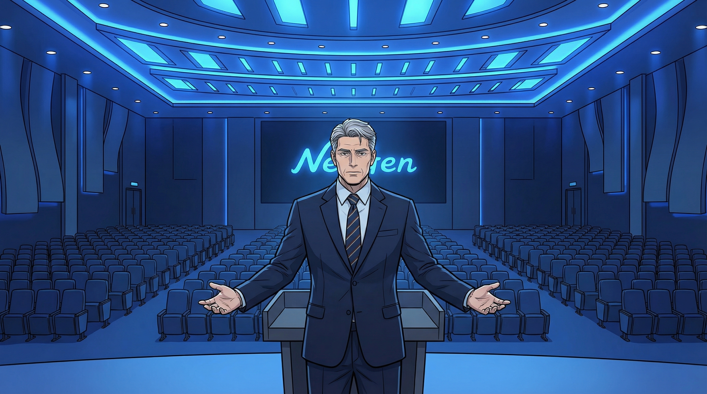
"다만 한 가지는 확신합니다."
"기술은 결국 사람을 향해야 합니다."
목소리가 스피커를 타고 대강당 구석까지 퍼졌다.
정호는 그 울림이 사라질 때까지 기다렸다.
"그걸 잊으면, 아무리 좋은 기술도 의미가 없습니다. 제가 서른 해 동안 배운 건, 결국 그겁니다."
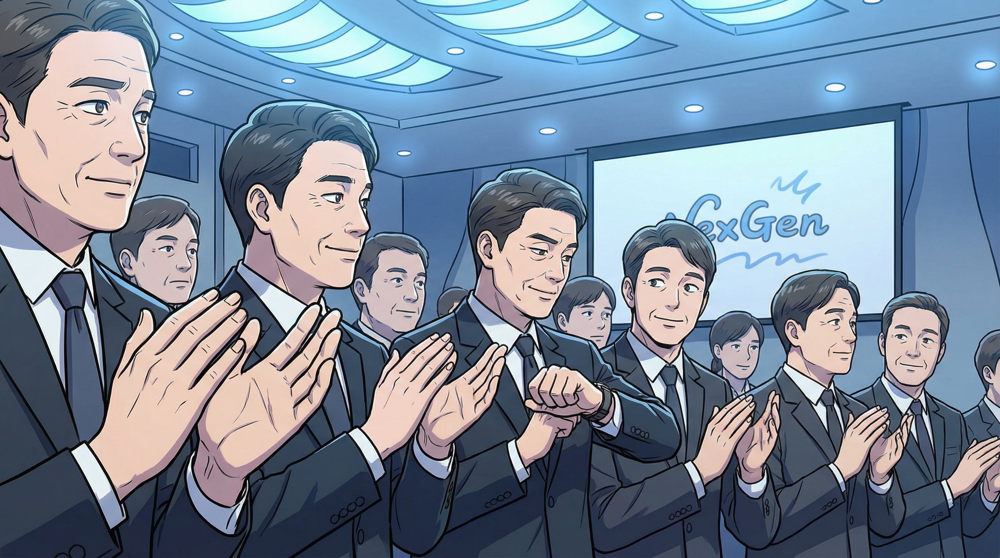
다시 박수가 터졌다. 이번에는 조금 길었다.
하지만 정호의 귀에는 같은 소리였다.
의례적이고, 적당하고, 곧 사라질 소리.
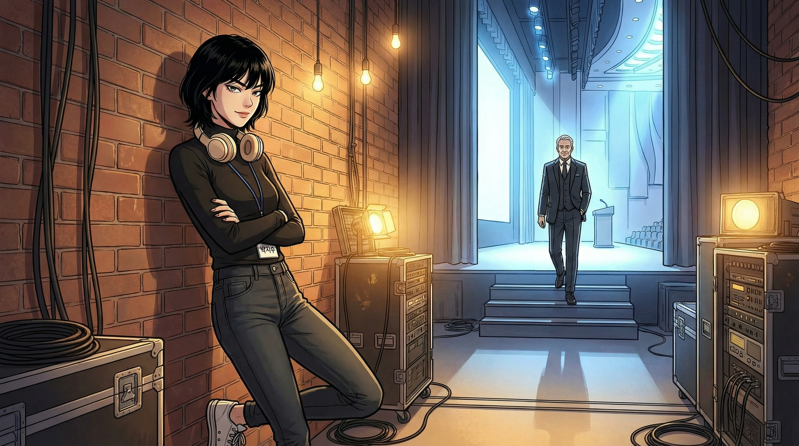
무대를 내려왔을 때 딸이 기다리고 있었다.
박지수. 스물다섯. 까만 터틀넥에 흰 운동화.
대기업 퇴임식 복장은 아니었지만, 지수는 원래 그런 것에 신경 쓰지 않는 아이였다.
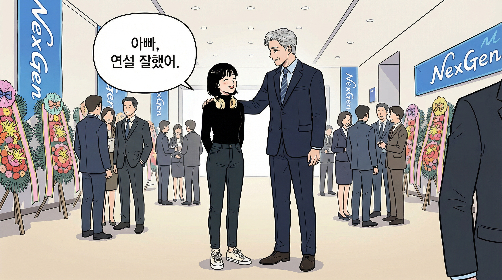
"아빠, 연설 잘했어."
"왔구나."
정호는 딸의 어깨를 가볍게 잡았다.
딸은 아버지의 손을 살짝 쥐었다가 놓으며 로비 쪽으로 고개를 돌렸다.
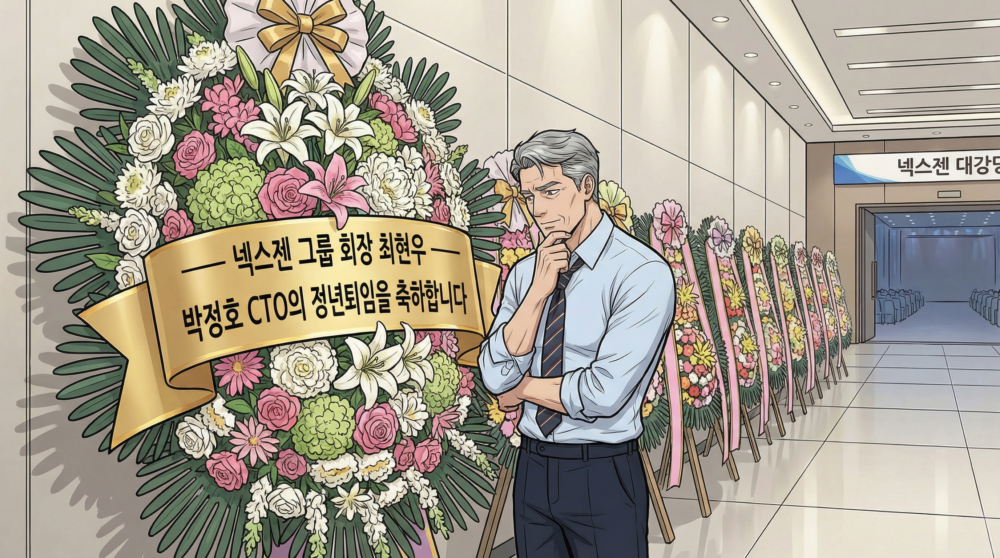
넥스젠 그룹 최현우 회장의 화환이 가장 크고 가장 앞에 놓여 있었다.
'넥스젠 그룹 회장 최현우 — 박정호 CTO의 퇴임을 축하하며'
글자가 금박으로 찍혀 있었다. 화환은 크고 격식을 갖추었지만,
보낸 사람은 이 자리에 없었다.
정호는 그 사실을 확인한 뒤 시선을 거두었다. 예상한 일이었다.
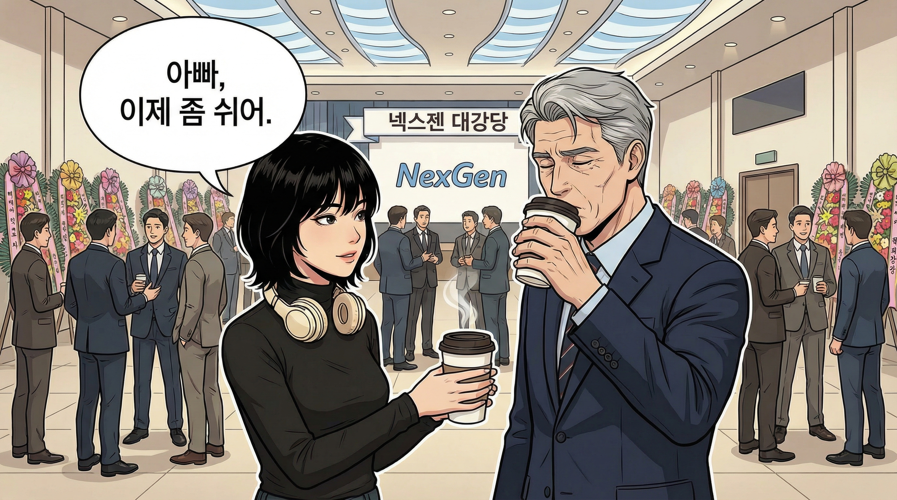
"아빠, 이제 좀 쉬어."
"쉬긴."
"진짜로. 골프도 치고, 여행도 다니고. 아빠 나이면 충분히 쉴 수 있잖아."
정호는 커피를 한 모금 마셨다. 리셉션 커피는 항상 미지근했다.
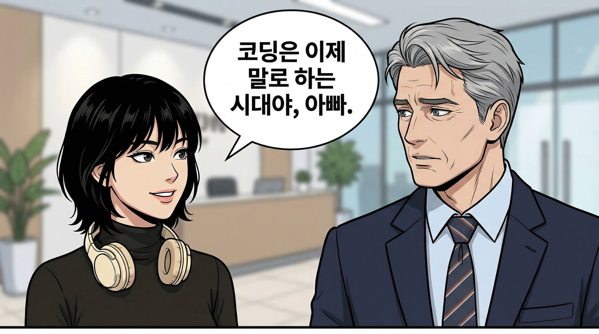
"코딩은 이제 말로 하는 시대야, 아빠."
가볍게 말했다. 아버지를 위로하려는 건지, 놀리는 건지 모를 톤이었다.
정호는 딸의 얼굴을 보았다. 지수는 웃고 있었지만, 눈은 아버지를 관찰하고 있었다.
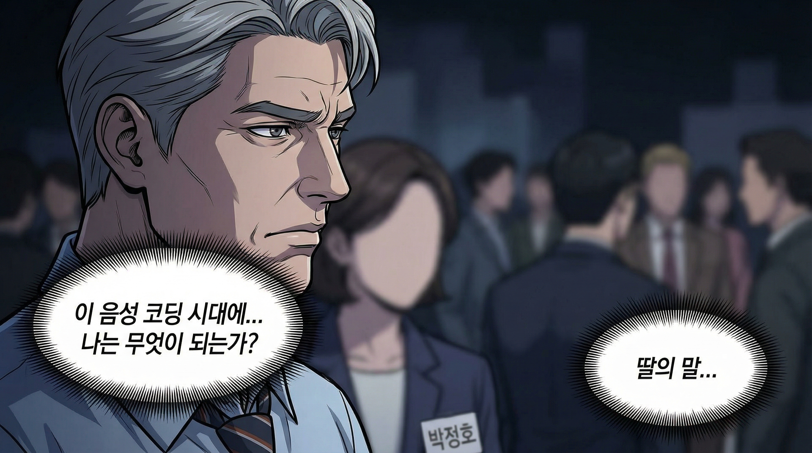
딸이 무슨 말을 하고 있는지 정확히 이해했지만, 그 말이 위안이 되지는 않았다.
오히려 어딘가 날카롭게 스치는 느낌이었다.
코딩은 말로 하는 시대. 그 시대에, 나는 뭐가 되는 건가.
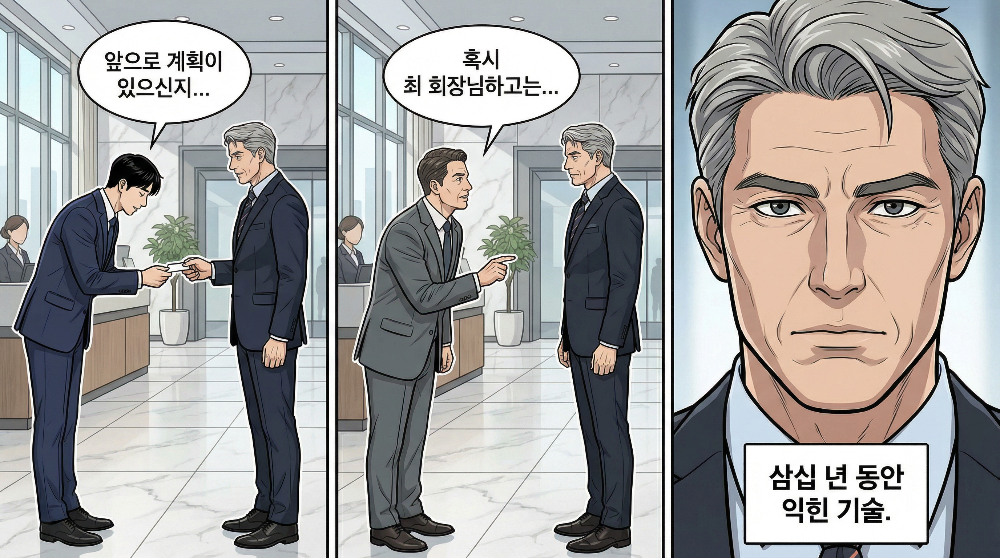
그 뒤로도 비슷한 대화가 서너 번 반복되었다.
축하한다는 인사, 건강하라는 당부, 그리고 슬쩍 던지는 탐색성 질문.
어디로 가시는 겁니까. 어딘가에서 제안이 온 건 아닌지. 혹시 최 회장님하고는.
정호는 한 번도 상대의 눈을 피하지 않았지만,
한 번도 속마음을 보여주지 않았다.
그것도 삼십 년 동안 익힌 기술이었다.
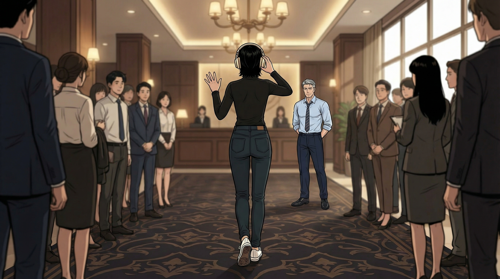
리셉션이 끝나갈 무렵, 자리를 빠져나왔다.
지수는 먼저 가겠다며 손을 흔들었다.
뒤돌아서는 순간, 지수가 헤드폰을 귀에 꽂는 게 보였다.
금방이라도 자신의 세계로 돌아갈 준비가 된 아이.
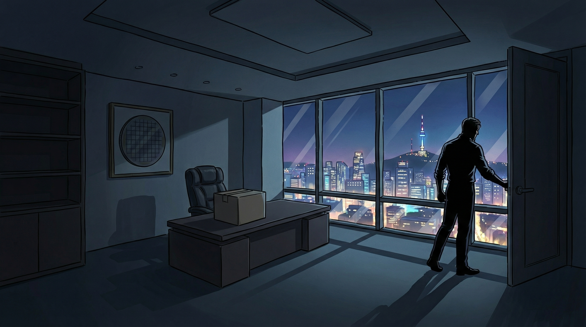
38층 CTO 집무실. 이미 짐은 대부분 옮긴 뒤였다.
정호는 문을 열고 안으로 들어갔다. 불을 켜지 않았다.
바깥 여의도의 불빛이 유리벽을 통해 들어오고 있었다.
예전에는 그 풍경을 좋아했다. 수만 개의 불빛 아래 수만 개의 시스템이 돌아가고 있다는 것.
그 시스템의 상당 부분에 자신의 결정이 반영되어 있다는 것. 그게 좋았다.
지금은 그냥 불빛이었다.
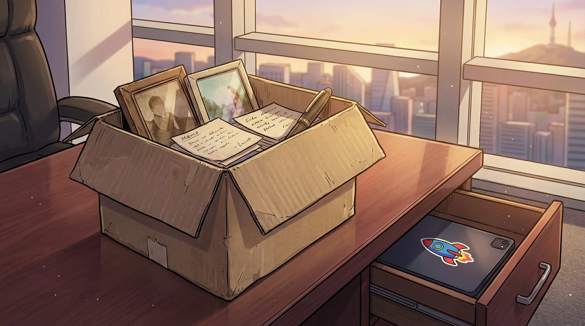
책상 위에 상자 하나가 놓여 있었다. 비서실에서 정리해둔 것이다.
삼십 년치 사물을 압축하면 이만한 크기가 된다는 것이
우습기도 하고, 당연하기도 했다.
서랍을 열었다. 메모 뭉치 아래에 태블릿 하나가 놓여 있었다.
자신의 것이 아니었다. 뒷면에 스티커가 붙어 있었다. 로켓 모양.
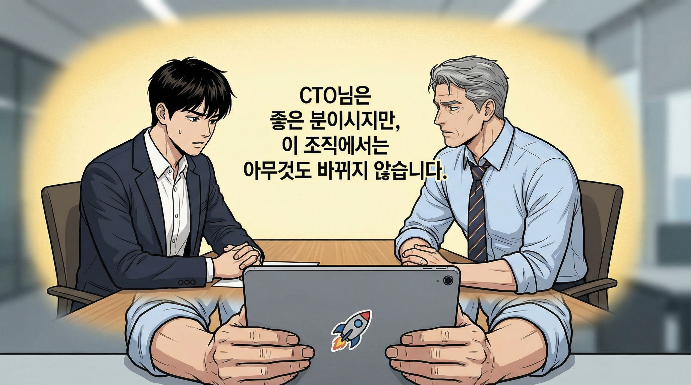
기술연구소 후배의 것이었다. 김재원.
작년에 넥스젠을 떠난 연구원. 정호가 직접 데려온 인재였다.
"CTO님은 좋은 분이시지만, 이 조직에서는 아무것도 바뀌지 않습니다."
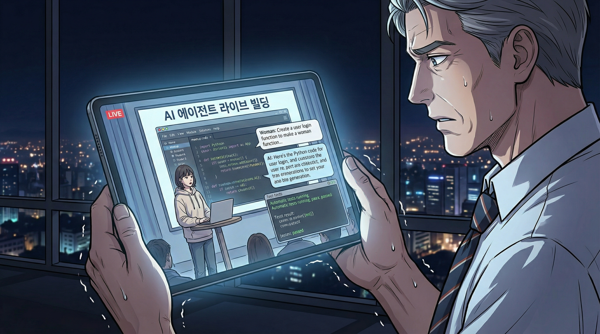
태블릿 전원을 눌렀다. 배터리가 남아 있었다.
잠금 화면 없이 바로 켜졌고, 마지막으로 열려 있던 앱이 나타났다.
컨퍼런스 영상. 어딘가의 소규모 밋업.
영상 제목: 'AI 에이전트 라이브 빌딩 — 음성 대화만으로 풀스택 앱을 만든다'
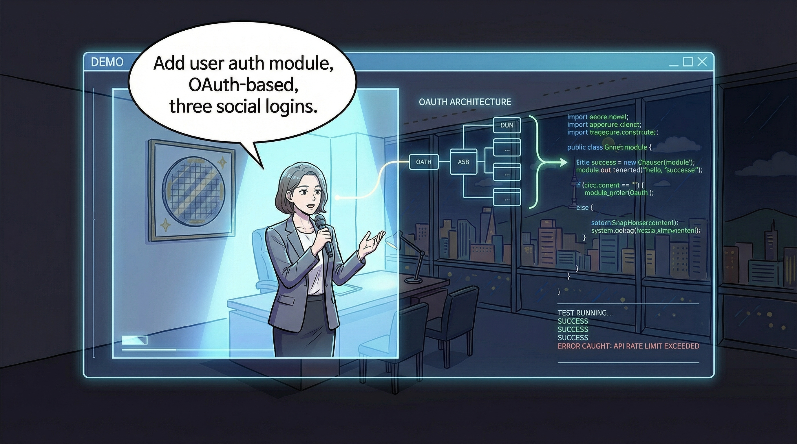
화면 속 여자가 말했다.
"자, 여기서 사용자 인증 모듈을 추가해줘. OAuth 기반으로, 소셜 로그인 세 가지 지원."
화면의 AI가 응답했다. 텍스트가 흘렀다. 코드가 생성되었다.
테스트가 실행되었다. 오류가 잡혔다.
그 모든 과정이 대화처럼 진행되었다. 명령과 실행이 아니라, 대화와 협업.
"이 부분은 내가 의도한 것과 좀 달라. 사용자가 처음 접속했을 때 느끼는 감정을 생각해봐."
"사용자의 첫 경험에서 가장 중요한 것은 신뢰감입니다. 인증 과정의 단계를 줄이고, 진행 상황을 시각적으로 보여주는 방식을 제안합니다."
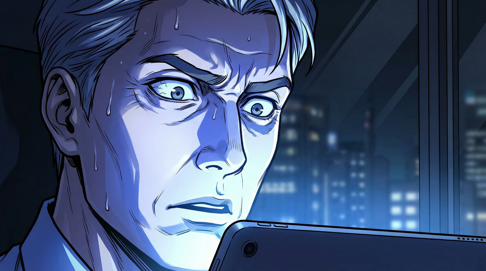
정호의 왼쪽 눈 밑이 미세하게 떨렸다.
이건 코딩이 아니다. 정호가 알던 코딩은 엔지니어가 에디터 앞에 앉아
한 줄 한 줄 논리를 쌓아가는 일이었다.
수천 명의 개발자가 수만 줄의 코드를 작성하고, 리뷰하고, 테스트하고, 배포하는 과정을
자신이 관리해왔다.
그 모든 게, 이 영상 속에서는 한 사람과 AI의 대화로 치환되어 있었다.
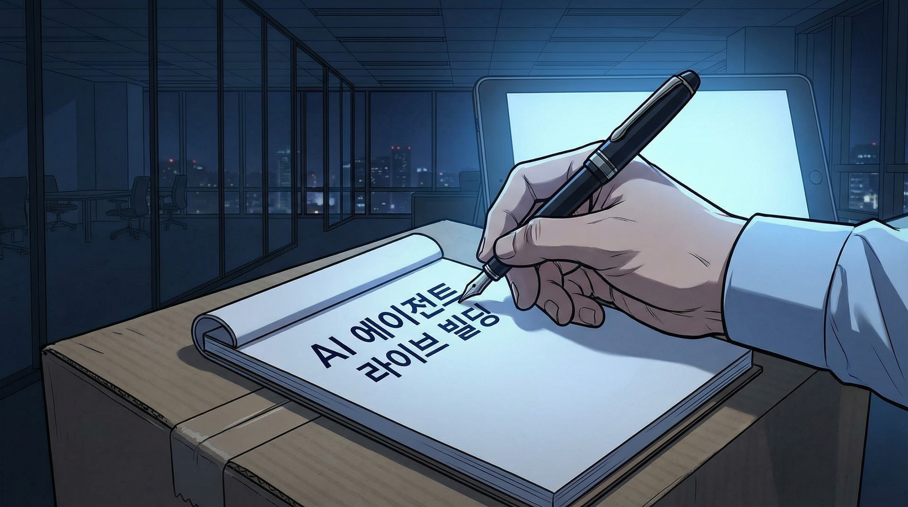
영상이 끝났을 때 태블릿 화면의 빛만이 어둠 속에서 그의 얼굴을 비추고 있었다.
정호는 한동안 꺼진 화면을 내려다보았다.
서랍에서 만년필을 꺼냈다. 상자 위에 놓인 메모지에,
영상에 나왔던 밋업의 이름을 적었다.
글씨는 정확하고, 힘이 있었다.
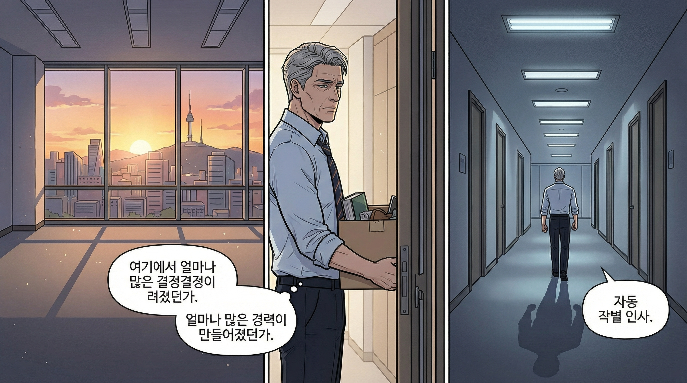
상자를 들고 사무실을 나섰다. 문을 닫기 전에 한 번 뒤를 돌아보았다.
빈 책상, 빈 책장, 유리벽 너머의 서울.
여기서 얼마나 많은 결정을 내렸던가. 얼마나 많은 사람의 커리어를 좌우했던가.
문을 닫았다.
복도의 형광등이 센서에 반응해 하나씩 켜졌다.
정호는 상자를 안고 걸었다. 발소리가 빈 복도에 메아리쳤다.
38층, 넥스젠 본사. 12월의 밤.
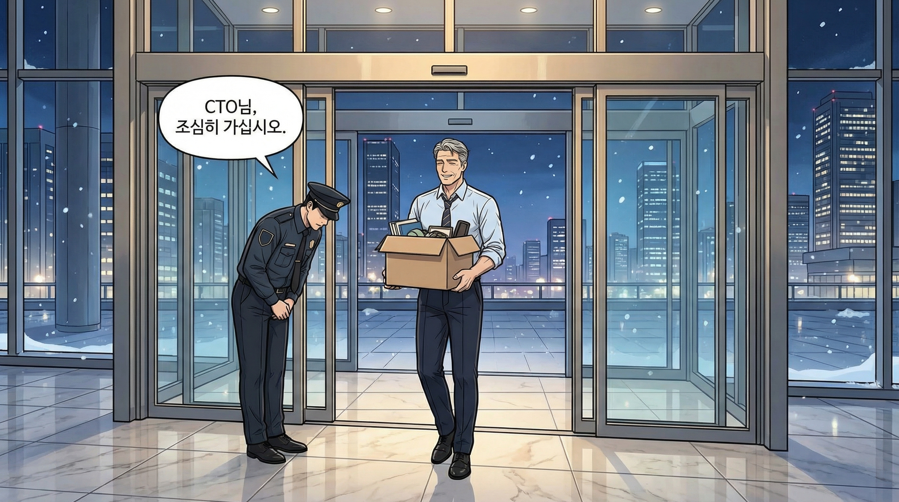
"CTO님, 조심히 가십시오."
"고맙습니다."
자동문이 열리고 12월의 찬 공기가 밀려왔다.
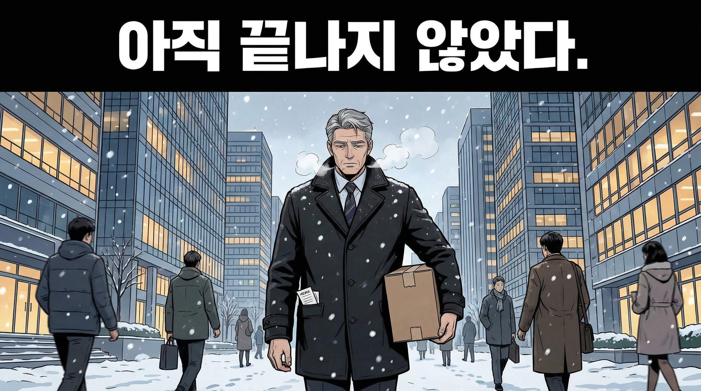
서른 해가 끝났다. 손에는 상자 하나와 메모지 한 장이 남았다.
정호는 걸었다. 12월의 서울은 차갑고, 거리는 밝았고,
사람들은 저마다의 방향으로 움직이고 있었다.
그 사이를 빈 손 — 아니, 상자를 든 손으로 걸었다.
어디로 가는지는 정하지 않았다. 다만, 한 가지는 알고 있었다.
아직 끝나지 않았다.